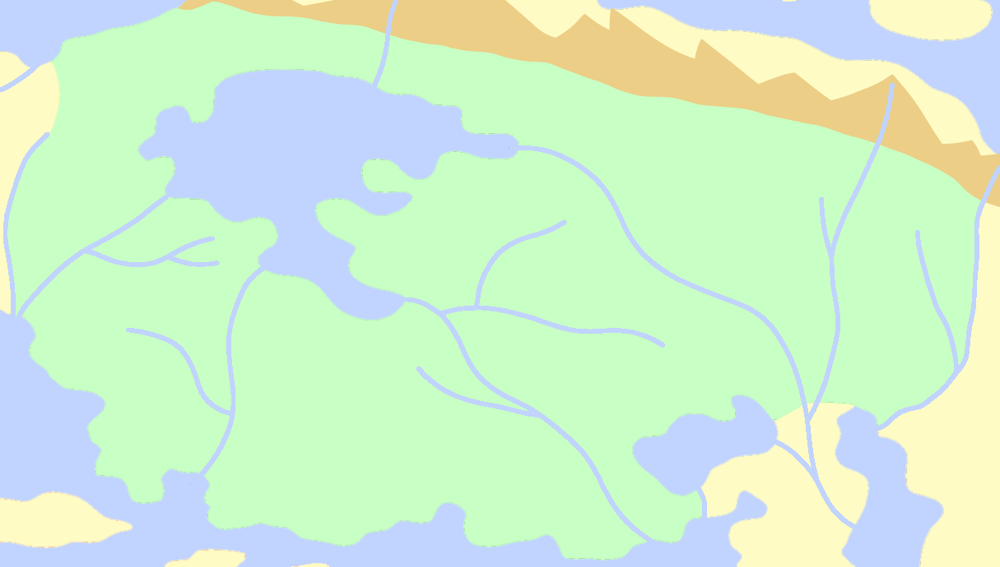
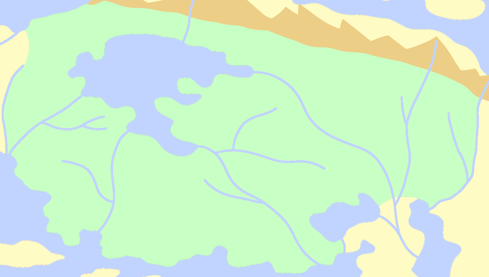

Dayglare
One of Dayglare's most prominent features is a large inland sea to the north of the region known as the Magnakus Sea. Once a part of the world ocean, it was closed off by the tectonic collision of Tiptop, which also led to the formation of the Tiptop Mountains.
There are nine major river systems that flow through Dayglare at some point in their journey to sea. This is the more than any other region in Karvaea.
Close